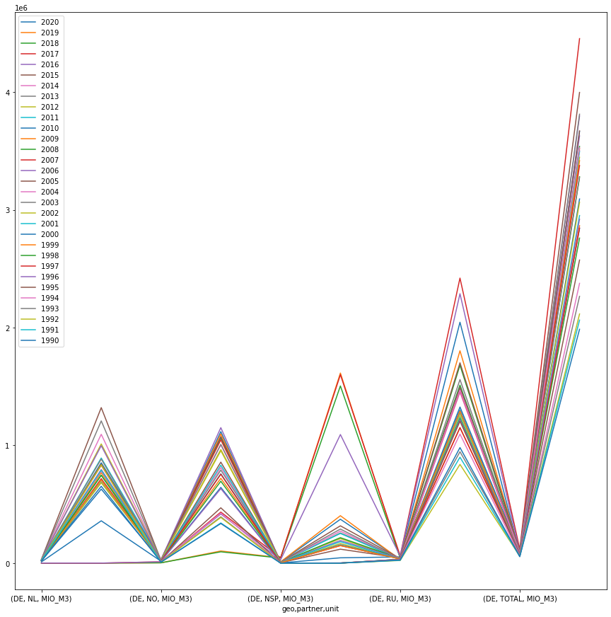
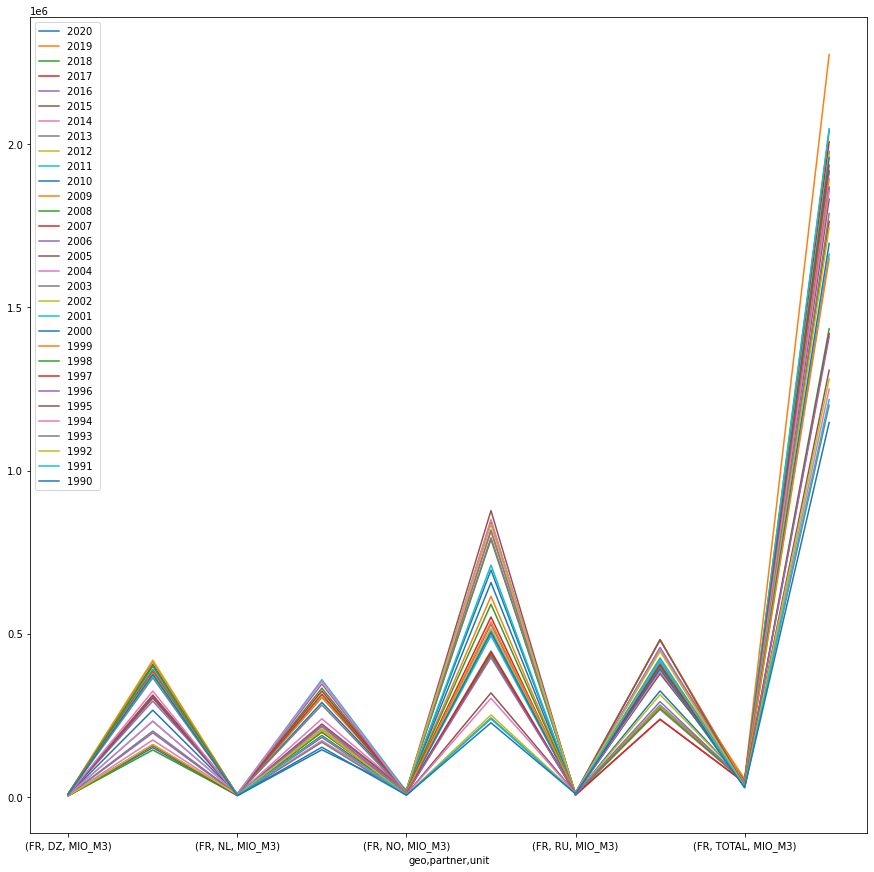

Eurostat Natural Gas Data
Import and Procedural Functions
import pandas as pd
import matplotlib.pyplot as plt
import geopandas as gpd
import folium
import contextily as cx
import rtree
from zlib import crc32
import hashlib
from shapely.geometry import Point, LineString, Polygon
import numpy as np
from scipy.spatial import cKDTree
from shapely.geometry import Point
from haversine import Unit
from geopy.distance import distance
import re
Query Strategy
Imports
TO many to list… I’ll ad them as I go below
Glossary
Units
Data should be reported in Terajoules (TJ) on the basis of Gross calorific values (GCV) and in million cubic metres (at 15oC and 760 mm Hg, i.e. Standard Conditions)
Source
Data
Converting all tsv to csv documents
Building tsv file list
import glob
# assign directory
directory = '/Users/jnapolitano/Projects/data/EuropeanEnergyData/ng'
tsv_list = [x for x in glob.iglob(f'{directory}/*.tsv')]
print(tsv_list)
['/Users/jnapolitano/Projects/data/EuropeanEnergyData/ng/imports_montth.tsv', '/Users/jnapolitano/Projects/data/EuropeanEnergyData/ng/ng_imports.tsv', '/Users/jnapolitano/Projects/data/EuropeanEnergyData/ng/ng_exports.tsv', '/Users/jnapolitano/Projects/data/EuropeanEnergyData/ng/supply_transformation_consumption.tsv', '/Users/jnapolitano/Projects/data/EuropeanEnergyData/ng/non_house_consumption.tsv', '/Users/jnapolitano/Projects/data/EuropeanEnergyData/ng/ng_stocks.tsv', '/Users/jnapolitano/Projects/data/EuropeanEnergyData/ng/gas_prices.tsv', '/Users/jnapolitano/Projects/data/EuropeanEnergyData/ng/house_hold_consumption.tsv', '/Users/jnapolitano/Projects/data/EuropeanEnergyData/ng/exports_month.tsv', '/Users/jnapolitano/Projects/data/EuropeanEnergyData/ng/transport_costs.tsv']
Converting to CSV
The columns of this data are ugly. Some are in csv format and others are in tab.
I’ll convert the entire document to csv to simplify our work.
for tsv_file in tsv_list:
filepath = tsv_file
outfile = filepath.replace('tsv','csv')
# reading given tsv file
with open(filepath, 'r') as myfile:
with open(outfile, 'w') as csv_file:
for line in myfile:
# Replace every tab with comma
fileContent = re.sub("\t", ",", line)
# Writing into csv file
csv_file.write(fileContent)
# output
print(outfile)
/Users/jnapolitano/Projects/data/EuropeanEnergyData/ng/imports_montth.csv
/Users/jnapolitano/Projects/data/EuropeanEnergyData/ng/ng_imports.csv
/Users/jnapolitano/Projects/data/EuropeanEnergyData/ng/ng_exports.csv
/Users/jnapolitano/Projects/data/EuropeanEnergyData/ng/supply_transformation_consumption.csv
/Users/jnapolitano/Projects/data/EuropeanEnergyData/ng/non_house_consumption.csv
/Users/jnapolitano/Projects/data/EuropeanEnergyData/ng/ng_stocks.csv
/Users/jnapolitano/Projects/data/EuropeanEnergyData/ng/gas_prices.csv
/Users/jnapolitano/Projects/data/EuropeanEnergyData/ng/house_hold_consumption.csv
/Users/jnapolitano/Projects/data/EuropeanEnergyData/ng/exports_month.csv
/Users/jnapolitano/Projects/data/EuropeanEnergyData/ng/transport_costs.csv
Natural Gas Imports Data
## Importing our DataFrames
filepath = "/Users/jnapolitano/Projects/data/EuropeanEnergyData/ng/ng_imports.csv"
## Reading the CSV Columns
ng_imports_df = pd.read_csv(filepath, skipinitialspace=True, low_memory=False)
# Repacing NA's
ng_imports_df = ng_imports_df.replace(to_replace=': ', value=0)
#coverting to float
ng_imports_df['1990 '] = ng_imports_df['1990 '].astype(float)
ng_imports_df['1991 '] = ng_imports_df['1991 '].astype(float)
ng_imports_df['1992 '] = ng_imports_df['1992 '].astype(float)
ng_imports_df['1993 '] = ng_imports_df['1993 '].astype(float)
ng_imports_df['1994 '] = ng_imports_df['1994 '].astype(float)
ng_imports_df['1995 '] = ng_imports_df['1995 '].astype(float)
ng_imports_df['1996 '] = ng_imports_df['1996 '].astype(float)
ng_imports_df['1997 '] = ng_imports_df['1997 '].astype(float)
ng_imports_df['1998 '] = ng_imports_df['1998 '].astype(float)
ng_imports_df['1999 '] = ng_imports_df['1999 '].astype(float)
ng_imports_df['2000 '] = ng_imports_df['2000 '].astype(float)
ng_imports_df['2001 '] = ng_imports_df['2001 '].astype(float)
ng_imports_df['2002 '] = ng_imports_df['2002 '].astype(float)
ng_imports_df['2003 '] = ng_imports_df['2003 '].astype(float)
ng_imports_df['2004 '] = ng_imports_df['2004 '].astype(float)
ng_imports_df['2005 '] = ng_imports_df['2005 '].astype(float)
ng_imports_df['2006 '] = ng_imports_df['2006 '].astype(float)
ng_imports_df['2007 '] = ng_imports_df['2007 '].astype(float)
ng_imports_df['2008 '] = ng_imports_df['2008 '].astype(float)
ng_imports_df['2009 '] = ng_imports_df['2009 '].astype(float)
ng_imports_df['2010 '] = ng_imports_df['2010 '].astype(float)
ng_imports_df['2011 '] = ng_imports_df['2011 '].astype(float)
ng_imports_df['2012 '] = ng_imports_df['2012 '].astype(float)
ng_imports_df['2013 '] = ng_imports_df['2013 '].astype(float)
ng_imports_df['2014 '] = ng_imports_df['2014 '].astype(float)
ng_imports_df['2015 '] = ng_imports_df['2015 '].astype(float)
ng_imports_df['2016 '] = ng_imports_df['2016 '].astype(float)
ng_imports_df['2017 '] = ng_imports_df['2017 '].astype(float)
ng_imports_df['2018 '] = ng_imports_df['2018 '].astype(float)
ng_imports_df['2019 '] = ng_imports_df['2019 '].astype(float)
ng_imports_df['2020 '] = ng_imports_df['2020 '].astype(float)
ng_imports_df.keys()
## This data set has spaces at the end of the years... Be aware of this when trying to findd keys
Index(['siec', 'partner', 'unit', 'geo', '2020 ', '2019 ', '2018 ', '2017 ',
'2016 ', '2015 ', '2014 ', '2013 ', '2012 ', '2011 ', '2010 ', '2009 ',
'2008 ', '2007 ', '2006 ', '2005 ', '2004 ', '2003 ', '2002 ', '2001 ',
'2000 ', '1999 ', '1998 ', '1997 ', '1996 ', '1995 ', '1994 ', '1993 ',
'1992 ', '1991 ', '1990 '],
dtype='object')
Natural Gas Imports Descriptive Statistics
ng_imports_df.describe()
.dataframe tbody tr th {
vertical-align: top;
}
.dataframe thead th {
text-align: right;
}
Replace 0’s with Numpy NAN
ng_imports_df.replace(0, np.nan, inplace=True)
Remove NAN Rows for the dataframe
I remove rows where all of the rows are 0 to reduce the size of the dataframe for analysis.
## There are 30 years of data in the set. If there are 30 columns per row with nan values that row will be dropped.
ng_imports_df.dropna(thresh=30, axis=0, inplace=True)
#df.dropna(thresh=2)
ng_imports_df.describe()
.dataframe tbody tr th {
vertical-align: top;
}
.dataframe thead th {
text-align: right;
}
Grouping Totals by Geo/State
geo_imports_df = ng_imports_df.groupby(['geo', 'partner','unit']).sum()
geo_imports_df
.dataframe tbody tr th {
vertical-align: top;
}
.dataframe thead th {
text-align: right;
}
With the tables compiled we can now look more in depthly at the imports of natural gas in europe.
State Code Reference Sheet Source
https://ec.europa.eu/eurostat/statistics-explained/index.php?title=Glossary:Country_codes
German Totals
german_totals_df = geo_imports_df.query('geo=="DE"')
#geo_imports_df.loc[pd.IndexSlice[:,'DE'],:]
German Totals Bar Chart
german_totals_df.plot(legend=True, figsize=(15,15), kind = 'bar')
<AxesSubplot:xlabel='geo,partner,unit'>

German Totals Line
Only including long term partners
german_totals_df.plot(legend=True, figsize=(15,15), kind = 'line')
<AxesSubplot:xlabel='geo,partner,unit'>

French Totals
french_totals_df=geo_imports_df.query('geo=="FR"')
french_totals_df
#geo_imports_df.loc[pd.IndexSlice[:,'DE'],:]
.dataframe tbody tr th {
vertical-align: top;
}
.dataframe thead th {
text-align: right;
}
French Totals Bar Chart
french_totals_df.plot(legend=True, figsize=(20,15), kind = 'bar')
<AxesSubplot:xlabel='geo,partner,unit'>
French Totals Line
Only long term partners
french_totals_df.plot(legend=True, figsize=(15,15), kind = 'line')
<AxesSubplot:xlabel='geo,partner,unit'>

Max Importers Per Year
max_imports_df = ng_imports_df.groupby(['geo', 'partner','unit']).max()
French Maximums
french_max_df=max_imports_df.query('geo=="FR"')
french_max_df
.dataframe tbody tr th {
vertical-align: top;
}
.dataframe thead th {
text-align: right;
}
French Max Bar Chart
french_max_df.plot(legend=True, figsize=(15,15),kind = 'bar')
<AxesSubplot:xlabel='geo,partner,unit'>

French Max Line
** Only long term partners
french_max_df.plot(legend=True, figsize=(15,15))
<AxesSubplot:xlabel='geo,partner,unit'>

German Maximums
german_max_df = max_imports_df.query('geo=="DE"')
german_max_df
.dataframe tbody tr th {
vertical-align: top;
}
.dataframe thead th {
text-align: right;
}
German Max Bar Chart
german_max_df.plot(legend=True, figsize=(15,15),kind = 'bar')
<AxesSubplot:xlabel='geo,partner,unit'>

German Max Line
** Only long term partners
german_max_df.plot(legend=True, figsize=(15,15))
<AxesSubplot:xlabel='geo,partner,unit'>

Gas Partners
partners_sum_df = ng_imports_df.groupby(['partner', 'geo','unit']).sum()
partners_sum_df
.dataframe tbody tr th {
vertical-align: top;
}
.dataframe thead th {
text-align: right;
}
Russian Partners
russian_partners_sum_df= partners_sum_df.query('partner=="RU"')
Russian Partner Bar Plot
russian_partners_sum_df.plot(kind='bar', figsize = (20,10))
<AxesSubplot:xlabel='partner,geo,unit'>
Russian Partner Line Graph
Only will include partners that hvae traded for 30 years. This is a good indicator of long term fossil fuel dependency.
russian_partners_sum_df.plot(kind='line', figsize = (20,10))
<AxesSubplot:xlabel='partner,geo,unit'>